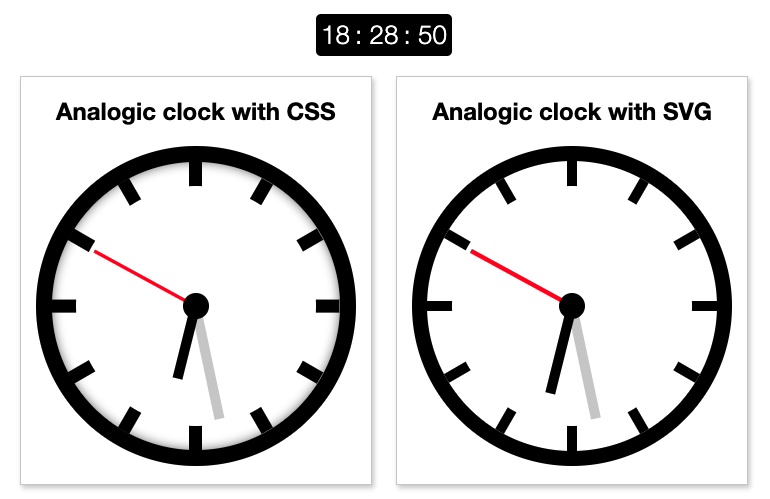

Snake Game
A clone of the famous snake game before smartphones were a thing.
You can play it in the live-version here

CSS flex-layout
The idea was to create a tiny framework based on css flex-box to manage grids without flooding the html.
Once one defines a container everything inside it is turn into a column, greatly reducing the amount of tags needed.
It is published as an npm package here and can be installed as:
1 | npm i @webdev-tools/css-flex-layout |
Usage:
1 | <section class="fl-3-cols-container"> |
Multiple-clocks
Create an animated clock with different technologies, like with CSS and with SVG + JavaScript
Live version: https://multiple-clocks.vercel.app/
